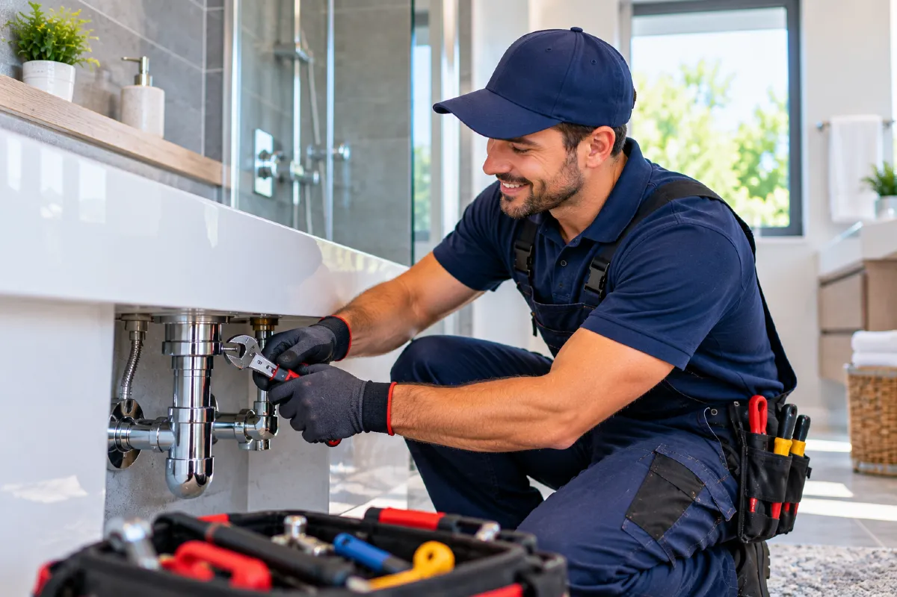

Toilet Repair in Round Rock, TX
We repair running toilets, weak flushes, tank leaks, and loose bases in Round Rock.
A plunger is the sensible first tool when the bowl water rises after a flush. A good seal around the drain opening and several controlled strokes can clear a soft blockage near the trap. It stops helping when the bowl refills without flushing properly, the water level changes on its own, or the problem is in the tank rather than the drain.
We check the parts that make a toilet fill, hold water, and flush: the fill valve, flapper, flush valve seat, handle, chain, tank bolts, and shutoff valve. A worn flapper can let water slip from the tank into the bowl, while a fill valve can keep adding water after the tank should be full. A loose toilet base or water at the floor can point to a failed wax ring, damaged flange, or a crack in the porcelain.
A toilet that only needs a flapper or handle can sometimes wait briefly if the water is shut off at the stop valve and the fixture is not leaking. A toilet with water at the base, an overflowing bowl, or water that will not stop running should not wait, because the floor, subfloor, and surrounding bathroom materials can take on water while the fixture continues to cycle.
Toilet keeps running
“My toilet keeps running” often means the tank refills every few minutes, the fill valve hisses after the flush, or water trickles into the bowl long after the handle has been released. We also hear that the toilet “won’t stop filling,” especially when water reaches the overflow tube inside the tank.
A “weak flush” can be a low tank water level, a slack lift chain, a worn flapper, blocked rim holes, or a partial obstruction in the bowl trap. A toilet that “won’t flush” may have a broken handle, disconnected chain, failed flush valve, or a blockage that a plunger cannot move. Gurgling in the bowl after another fixture drains can also indicate that the issue is beyond the toilet itself.
Water around the toilet base, a rocking bowl, a sewer smell near the floor, and a tank that leaks onto the wall are different symptoms again. These faults can look similar from outside the fixture, but the failed part, labor, and materials can be very different once we inspect the tank, bowl, flange, and shutoff connection.
Toilet inspection
At the fixture, we begin by flushing the toilet and watching the bowl level, tank refill, overflow tube, and water supply connection. We remove the tank lid, inspect the flapper and chain, check whether the fill valve shuts off, and look for cracks, mineral buildup, loose bolts, and moisture around the base. A basic tank and bowl check commonly takes about 15 to 30 minutes, with more time needed when the toilet must be pulled from the floor.
We can measure the water level in relation to the overflow tube and test the shutoff valve before disconnecting the supply line. When a pressure gauge is appropriate, normal residential water pressure is generally kept below 80 psi, since excessive pressure can make fill valves and supply connections cycle or leak. We also check whether the bowl rocks, whether the closet bolts are secure, and whether the flange below the toilet is holding the fixture at the right height.
Flappers, fill valves, handles, chains, supply lines, and some tank bolts are usually the parts we address during the callout when the correct replacement is available. A damaged floor flange, cracked bowl, seized shutoff valve, or a specialty tank component may require a separate booking, particularly when the toilet has to be reset or a matching manufacturer part must be ordered.
Tank parts and shutoff valves
The age and design of the tank parts affect the scope of a repair. A common flapper or universal fill valve is different from a proprietary flush cartridge, an unusual tank-to-bowl gasket, or an older fixture with parts that are no longer widely stocked. A replacement that matches the flush valve opening, tank shape, and manufacturer hardware avoids a repair that does not seal or flush correctly.
Access also changes the work involved. A toilet in a tight water closet, a shutoff valve behind the bowl, corroded closet bolts, or a supply line that cannot be isolated cleanly can add removal and testing work. If the shutoff valve has seized, the flange is damaged under the toilet, or a matching part has to be ordered, the repair can involve more than the tank mechanism. Work involving a changed drain connection or flange condition may also need local sign-off before the fixture is reset.
Tank model and bathroom access
Before calling, check which bathroom contains the toilet and whether it is the only working fixture in that room. The model number may be stamped inside the tank, on the back of the bowl, or beneath the tank lid, and a clear photo of that marking can help us identify the correct flapper, fill valve, or flush valve assembly.
Let us know whether the toilet is running now, whether water is on the floor, and whether the shutoff valve beside the bowl turns. If the toilet rocks, mention whether the floor is tile, vinyl, or another finished surface, since the base and flange may need inspection. Clear access around the tank and bowl helps us reach the supply line, bolts, and floor connection. Call Plumbing Solutions Round Rock at (737) 405-5790 before water at the toilet base spreads into the floor or subfloor.
Hours of operation
| Monday | Open 24 hours |
| Tuesday | Open 24 hours |
| Wednesday | Open 24 hours |
| Thursday | Open 24 hours |
| Friday | Open 24 hours |
| Saturday | Open 24 hours |
| Sunday | Open 24 hours |
Not what you were after? Go back to the home page or faucet repair.